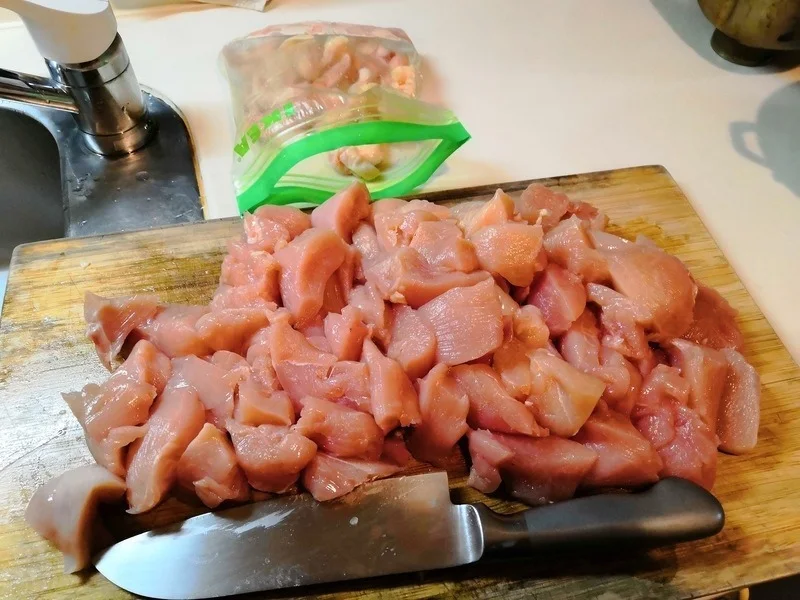

肉・豆腐のおかず
おから豆腐チキンナゲット
粗く刻んだ鶏胸肉に、豆腐、卵、おからパウダーを混ぜて揚げるナゲットです。私が公開してきたおから料理の中でも、揚げ物も適度に楽しみながら、食べ
液体塩こうじと香辛料で下味をつけた鶏胸肉に、豆腐と卵を混ぜ、まとめて蒸してから切り分けるミートローフです。私の公開記事では、切ってそのまま食べるだけでなく、スライスして卵と一緒に焼く使い方も紹介しました。


鶏肉は細かくしすぎず、粗めのひき肉にします。豆腐や卵と混ぜる前に下味をつけるので、ナゲットとは味付けの順番が違います。
液体塩こうじ大さじ4は、この料理の分量です。別の料理の塩の分量と混同しないでください。
おからパウダーは、大さじ3で「約20g」と記載しています。つくねの10gやナゲットの20gとは、肉や豆腐の量が違います。粉の種類によって大さじ1杯の重さも変わるので、この数字をほかのレシピの換算には使いません。
蒸す時間は、肉だねの太さや大きさで変わります。中心まで十分に火が通ったか確かめてください。
元記事では、蒸したあと30分以上置いて、味と肉汁を落ち着かせる方法を紹介しています。これは保存のために常温で置いておくという意味ではありません。食べる分と保存する分を分け、保存する分は小分けにして速やかに冷やしてください。
私はもち麦ごはんと合わせて食べ、豆腐の入った、ふわっとしっとりした食感を紹介しています。刻んでサラダに入れたり、サンドイッチにしたりする使い方もあります。
加熱時間は作った時の目安です。容器や調理器具によって仕上がりは変わります。中心まで火が通っていることを確認してください。
おからチキン豆腐ミートローフの材料・作り方（50kgdiet.com） →
このページは書籍の改訂原稿をもとに掲載しています。元記事は過去の記録のため、材料や表現が異なる場合があります。